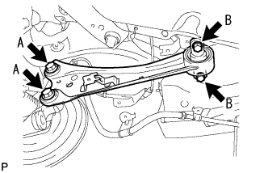
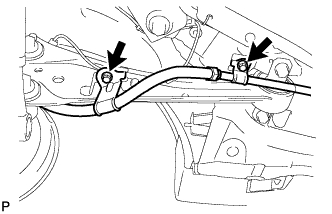
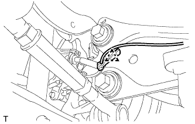
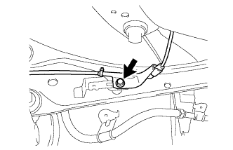

Trailing Arm Assembly Rear Installation |
| 1. Install Trailing Arm Assembly Rear |
 |
Install the trailing arm assembly rear with the 4 bolts.
| 2. Temporarily Tighten Rear Suspension Arm Assembly NO.1 LH |
 |
Install the rear suspension arm assembly No. 1 LH to the rear suspension member, and temporarily tighten it with the bolt and nut.
| 3. Install Parking Brake Cable Assembly NO.3 |
 |
Install the parking brake cable assembly NO.3 with the 2 bolts.
| 4. Install Speed Sensor Rear LH (Drive Type 4WD) |
 |
Install the clamp.
 |
Install the speed sensor rear LH with the bolt.
| 5. Install Skid Control Sensor Wire (Drive Type FF) |
 |
Install the clamp.
 |
Install the skid control sensor wire with the bolt.
| 6. Install Rear Tire |
| 7. Stabilize Suspension |
Lower the vehicle and bounce it up and down several times to stabilize the rear suspension.
| 8. Fully Tighten Rear Suspension Arm Assembly NO.1 LH |
|
Fully tighten the bolt of the rear suspension arm assembly No.1 LH (rear suspension member side).
| 9. Install Rear Tire |
| 10. Inspect and Adjust Rear Wheel Alignment |
)